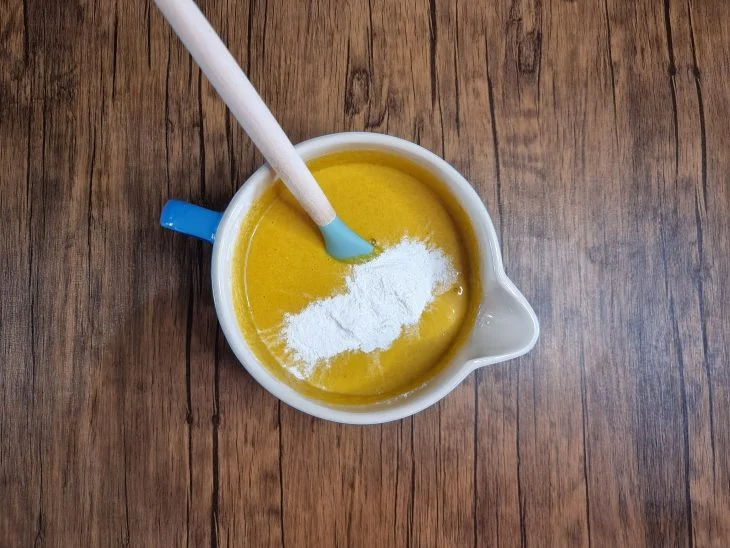
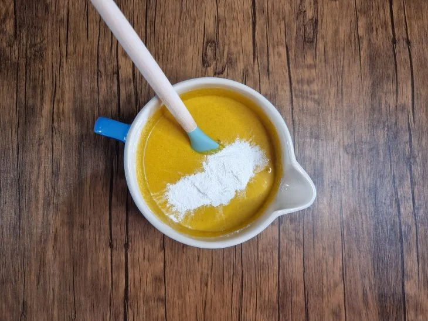

-
 57 receitas com frango que são deliciosas e fáceis de preparar
57 receitas com frango que são deliciosas e fáceis de preparar
-
 42 receitas com peito de frango práticas e irresistíveis
42 receitas com peito de frango práticas e irresistíveis
-
 32 receitas de filé de frango para variar o cardápio do dia a dia
32 receitas de filé de frango para variar o cardápio do dia a dia
-
 10 receitas de fricassê de frango cremoso que fazem sucesso na mesa
10 receitas de fricassê de frango cremoso que fazem sucesso na mesa
 Bolo de cenoura de liquidificador
Bolo de cenoura de liquidificador
Ingredientes da massa
Ingredientes da calda
Modo de preparo do bolo
Reúna todos os ingredientes da massa;
Em um liquidificador, adicione
as cenouras, o óleo e bata até ficar
homogêneo;
Acrescente o açúcar, os ovos, o sal
e bata até incorporar tudo;
.webp) Transfira para um recipiente e
Transfira para um recipiente e
coloque, gradualmente a farinha
e vá misturando;
 
Junte o fermento e misture,

Junte o fermento e misture,
delicadamente, até incorporar;
Despeje a massa em uma forma
untada, enfarinhada e leve ao forno
preaquecido a 180 ºC por cerca 40
minutos;
Separe os ingredientes da cobertura;
Em uma panela, adicione o açúcar, o
chocolate em pó, a manteiga, o leite,
misture bem e deixe cozinhar até
começar a desgrudar do fundo da
panela;
Desenforme o bolo, deixe ele esfriar
e despeje a calda por cima,
espalhando bem;
Agora é só servir. Bom apetite!